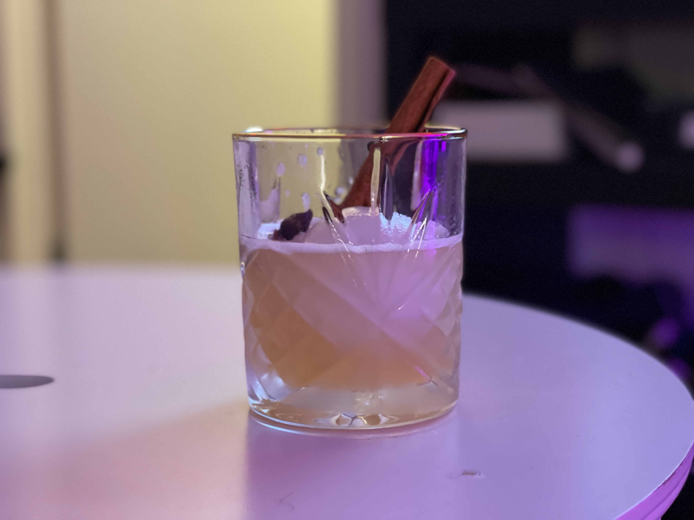

Whisky Sour

Sweet, Sour, and Chilled. A Whisky Sour Garnished with Cinnamon
This classic Whisky Sour recipe with a twist.
Shaken with your choice of Whisky, this recipe uses spiced syrup,
a switch up from the standard simple syrup. This drink is sure to please
your tastebuds.
Garnish with a cinnamon stick for an extra touch of style and spice.
Ingredients:
- 1oz Whisky, Bourbon, or Scotch
- 3/4oz Lemon Juice
- 3/4oz Spiced Syrup
- 1 cinnamon stick.
Steps:
- Chill a whisky glass.
- Add the listed ingredients and ice to a shaker.
- Shake until shaker is frosted over.
- Add a spherical ice block to whisky glass.
- Strain cocktail into whisky glass.
- Add cinnamon stick to glass.
Homepage